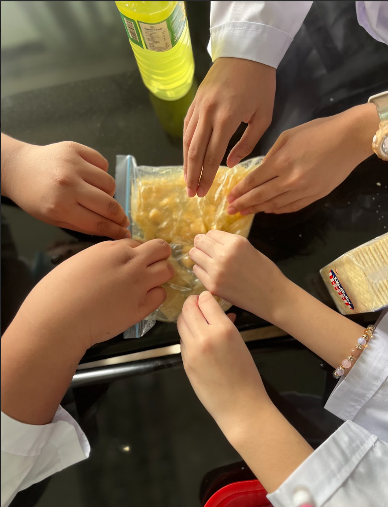
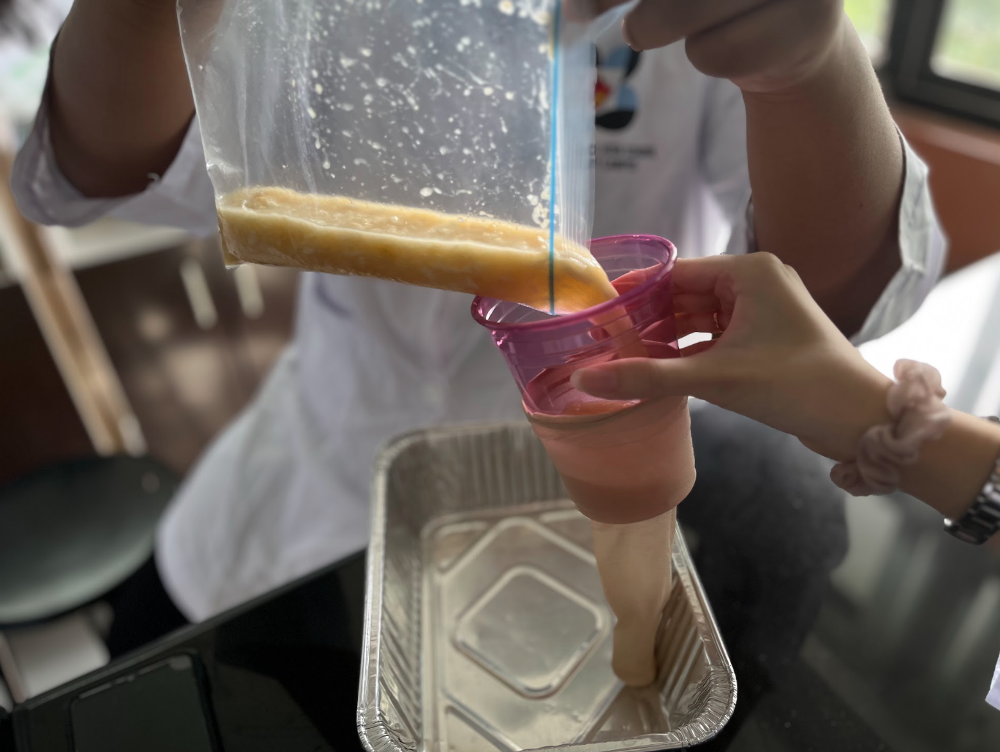
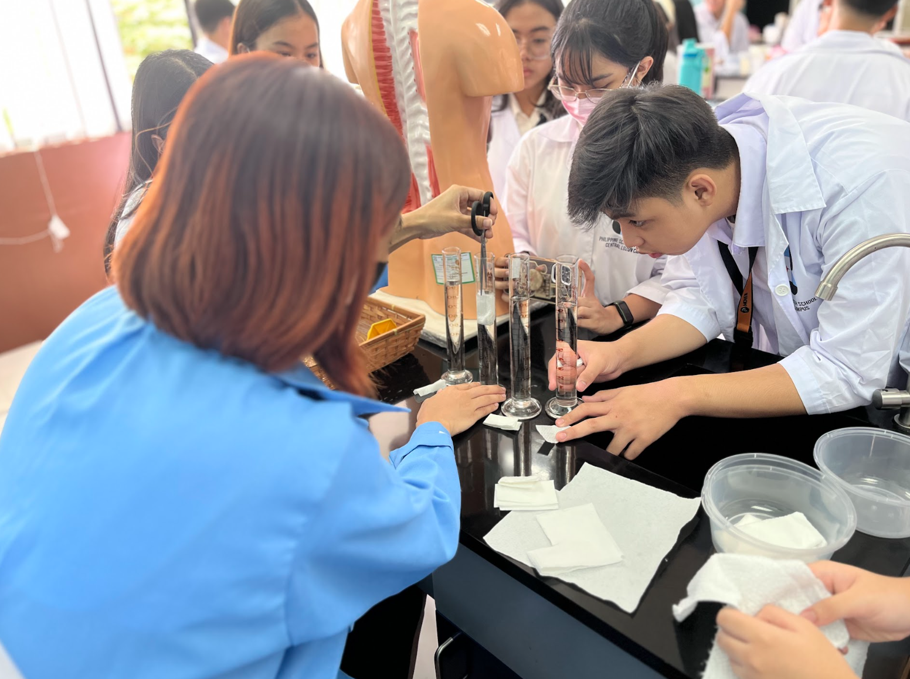
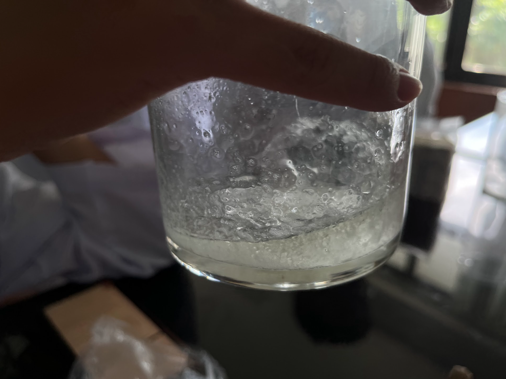
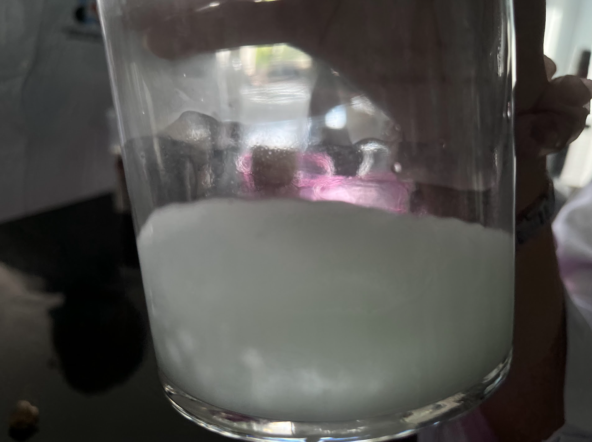

Do you wanna know how the digestive system works? It's a good thing you clicked on this “Laboratory Page!” Hold on! Why do you need to learn about the digestive system? Well, it’s because learning it can help you with your understanding of digestive health due to the knowledge you’d gain from learning about the digestive system! A fun fact is that the digestive system plays a vital role in your overall health! It can also be a source of stomach aches, bloating, and much more painful stuff! Yikes! If you're still hesitating about learning it because you fear that you won’t get it because of the complex words and complicated stuff like that! Then don’t you fret! Since the content below is a simplified version of the system you can also do it in your home!! So what are you waiting for? Learn about the digestive system!!
Main Questions:
What is being simulated by putting bananas and crackers in the zip lock?
What is being simulated by the addition of water?
What does the zip-locked bag represent?
What does crushing the food simulate?
What is being simulated by the addition of orange juice?
What do you think are the possible biomolecule components of the food inside?
What is being simulated by the liquid flowing out of the stocking?
What does the tray represent?
What is left inside the stocking?
What is being simulated by pushing the partially solidified content?
Crushing Stage
Transfer Stage
Observations and Discussion of Crushing Stage:
We observed that the setup is very similar to our digestive system, including parts such as ingestion and digestion. This can be seen in the crushing of bananas and crackers and pouring of liquids (representing the saliva and acid in the stomach) in the ziplock bag (representing the stomach) and crushing it further respectively (simulating the stomach crushing the food). The biomolecules in the banana and soda crackers include proteins, lipids, and nucleic acid, however, we think carbohydrates are the predominant biomolecules.
Observations and Discussion of Transfer Stage:
We found that the liquids overflowing from the stocking simulate the absorption of nutrients, while the tray represents the body. The leftover parts in the stocking represent the things the body cannot break down while pushing the partially solidified content simulates the bowel movement.
Main Questions:
Which paper towel absorbed the largest amount of water? What could be the possible explanation?
In which organ of the digestive system can you compare the paper towels? How does the structure of the organ help in its function?
Tissue absorbtion
Observations:
We observed that the paper towel that absorbed the largest amount of water was the one folded four times. A possible reason for this is that there was more space in the tissue to absorb and hold water. The paper towels can be compared to epithelial tissue, as this is the tissue that helps in the absorption of water. Microvilli in epithelial tissues aid in absorption, as it helps create more surface area for absorption.
Main Question:
Explain the role of bile in digestion. Is it involved in chemical or mechanical digestion?
Jar A
Jar B
Observations:
In jar A, we can see that the oil wasn’t able to mix thoroughly with the water whilst in jar B, the oil was able to mix well with the water. This is most likely due to the soap acting like bile’s part in digestion wherein the bile breaks down lipid molecules into smaller lipid globules. Bile isn’t a digestive enzyme and only breaks down fatty compounds into smaller droplets where the pancreatic lipase can break down.